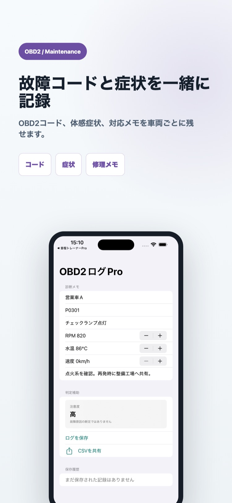
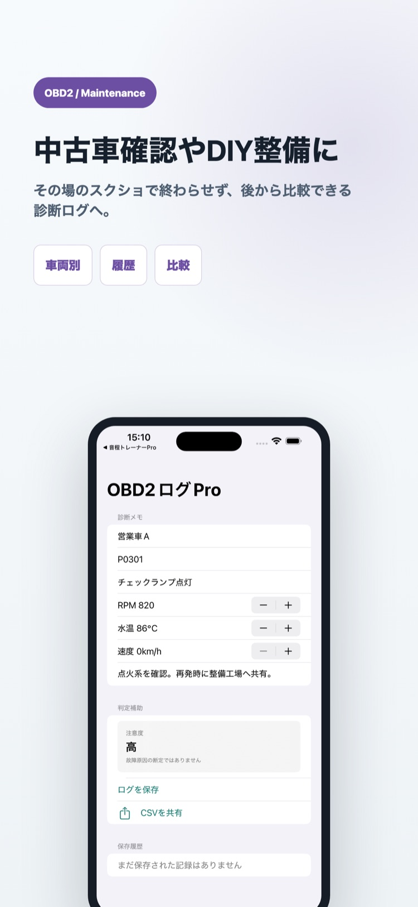

向いている人
DIY整備、車両点検、中古車確認で故障コードを記録したい人向け。
7月23日まで導入価格 1000円（通常2500円）
外部スキャナーで確認したOBD2故障コード、車両状態、対応メモを手入力で整理できます。

DIY整備、車両点検、中古車確認で故障コードを記録したい人向け。
コードを消去した後に症状や作業内容を思い出そうとしても、整備履歴がつながりません。


故障コードや車両状態を確認できる外部OBD2スキャナー。
DTC、警告状態、RPM、水温、速度、症状、対応内容を車両別にまとめます。
複数の整備ログをCSV形式で共有できます。
いいえ。本アプリはアダプターへ接続せず、外部スキャナーで確認した値を手入力します。
いいえ。コードの読取り・消去は外部スキャナーで行い、本アプリには消去前の状態と対応履歴を残します。
車両名、故障コード、警告状態、RPM、水温、速度、症状、対応内容を記録できます。
はい。複数の記録をCSV形式で共有できます。ただし故障原因や安全性を判定するアプリではありません。
OBD2診断ログProは1000円（7月23日まで・通常2500円）の買い切りです。機能と対応端末はApp Storeで確認できます。